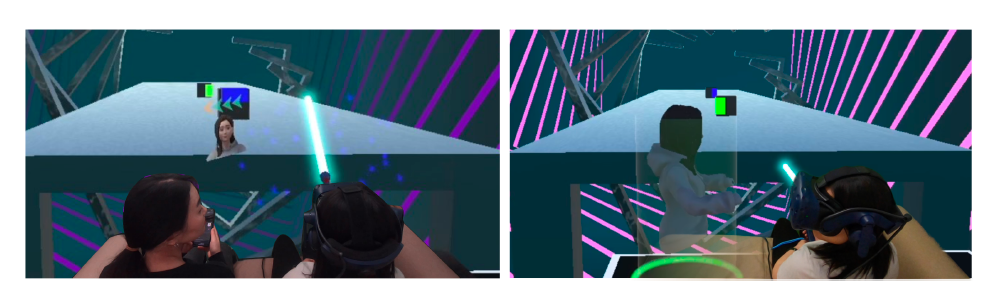

XR UX Case Study
Awareness in VR
Designing subtle awareness cues that help VR users notice nearby people without breaking immersion.

Challenge
VR users can become disconnected from nearby people. In close everyday settings, social signals are subtle, but users still need to notice when someone wants to interact.
Contribution
I designed and evaluated three awareness concepts that communicate another person’s intent and location without overly disrupting the VR experience.
Research contribution
Based on a controlled study with 22 participants, the project shows that a mixed visualization best balances early awareness, locating the nearby person, and preserving immersion.
Problem
How do you notice someone nearby without breaking immersion?
VR creates immersion by reducing awareness of the physical world. That becomes a UX problem when another person nearby wants to interact, especially in close everyday settings like sharing a couch.
Most existing VR awareness systems rely on distance changes, but in close social situations distance often stays almost constant. A more meaningful cue is orientation: a nearby person turns toward you before they speak.
The design challenge was to communicate that intent early enough to be useful, but gently enough to preserve the ongoing VR experience.
Users and context
Designing for constrained social spaces
This project focused on VR users in close social settings, such as sitting next to someone in a living room or shared public space. In these contexts, the other person is already nearby, so awareness is less about detecting distance and more about recognizing subtle changes in attention and intent.
The goal was not only to help users notice another person, but to support smooth social interaction without making the awareness cues feel intrusive or disruptive.
My role
I translated proxemic theory into interaction patterns
I contributed to the interaction concepts, visualization design, prototype, and evaluation. My role focused on translating a research question about close-range social awareness into concrete, testable interaction patterns for VR.
Process
From social cue to interaction design
01 · Reframe
Shifted the problem from distance to orientation
In close social spaces, people do not move much toward the VR user. Instead, turning toward someone becomes the key signal that an interaction is about to begin.
02 · Explore
Developed three visualization concepts
I explored different ways to communicate nearby presence and intent, from lightweight in-view cues to more spatially grounded representations.
03 · Prototype
Built a VR game scenario
The concepts were implemented in a controlled VR gameplay scenario where a nearby seatmate attempted to initiate conversation during the experience.
04 · Evaluate
Compared awareness, locating, and immersion
I evaluated how quickly users noticed the nearby person, how easily they located them, and how much each visualization affected immersion.
>
Interaction concepts
Three ways to communicate nearby intent

Animoji
A lightweight in-view cue continuously signaled the nearby person’s growing intent to interact.
Avatar
A spatial representation appeared closer to the nearby person’s real-world location, helping users understand where the interaction was coming from.
Mixed
A progressive approach started with an in-view cue and then guided attention toward the nearby person’s physical location.
Design direction
Design awareness as a gradual transition
Rather than using a single alert, the most effective direction was to reveal awareness in stages: first capture attention, then guide the user toward the other person’s location as interaction becomes more likely.
Prioritize fast detection
Users need an early signal that something is happening, especially during engaging VR tasks.
Support physical locating
Awareness is incomplete if users notice someone but still cannot tell where that person is.
Reduce disruption
Cues should fit the flow of the experience and avoid feeling like a hard interruption.
Validation
Testing awareness in an immersive gameplay scenario
The concepts were evaluated in a within-subject study with 22 participants. Users played a seated VR game while a nearby seatmate attempted to start a conversation. I compared how each concept affected reaction time, locating performance, social presence, and game experience.

In-view cues supported fast awareness
Participants reacted faster when the system first signaled intent directly in view rather than relying only on a spatial representation.
Spatial cues helped users locate the person
Representing the nearby person in space made it easier for users to understand where the interaction was coming from.
Outcomes
What worked best
The mixed concept performed best overall
It combined the speed of in-view awareness with the clarity of spatial guidance, producing the strongest overall balance of awareness and interaction quality.
Awareness should be progressive, not binary
The findings suggest that gradual transitions prepare users for social interaction better than a single abrupt alert.
Reflection
What I learned
This project taught me that awareness systems are not just about showing information. They are about timing, attention, and how interaction unfolds in context. The strongest solution was not the most visible one, but the one that guided users gradually from noticing to understanding.